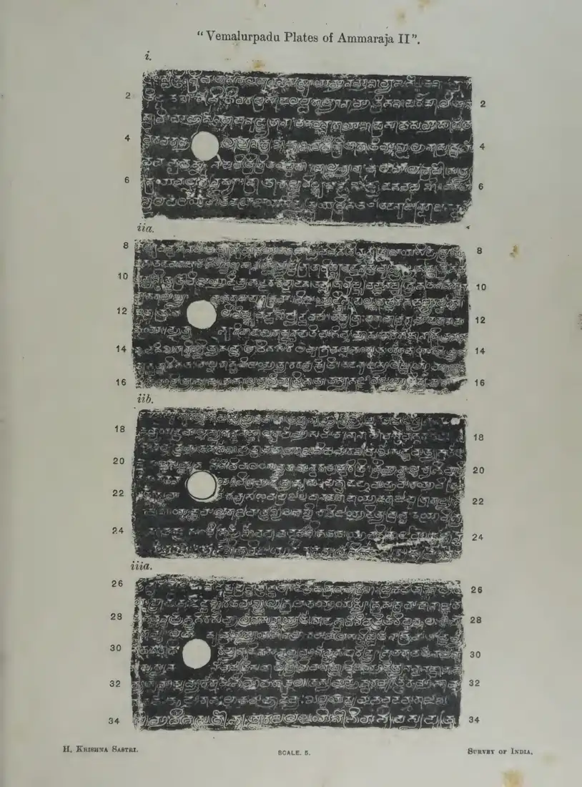
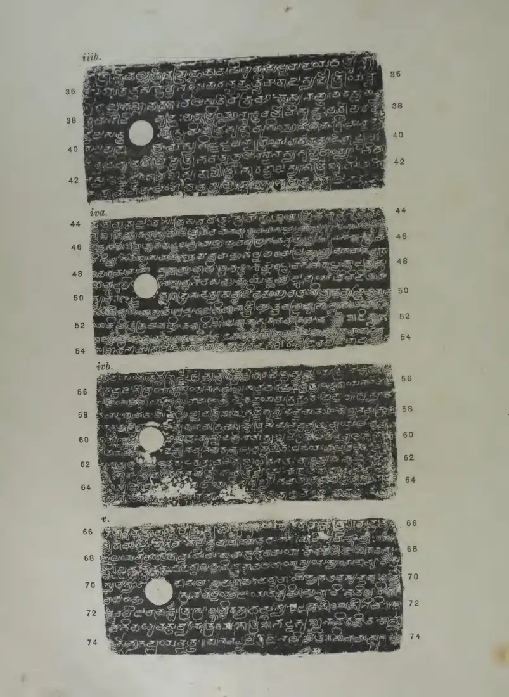

Vemalurpadu plates of Ammaraja II
VEMALURPADU PLATES OF AMMARAJA II.
BY E. HULTZSCH, PH.D. ; HALLE (SAALE).
For ink-impressions of these copper-plates I am indebted to Rao Bahadur Krishna Sastri, who acquired the plates for the Madras Museum in 19102 from a Muhammadan resident of
1 [The plate gives adyēha.—Ed.]
2 [See Ep. Rep. for 1910, p. 10, para. 10, and p. 15, App. A, No. 4.—Ed.]
Vēmalūrpādu, a village close to the Phirangipuram Railway Station in the Guntur District. He describes them as follows :—
“ Five plates with raised rims. The first and the last have writing on their inner sides only. The plates measure 9½” by 4½”. They are held together by a circular copper ring which measures 5¾” in diameter and 2” in thickness. The ends of the ring are fixed into the bottom of a seal whose base is fashioned into a lotus of eight petals. The seal, which is circular, measures 3¾” in diameter and bears, within a countersunk surface, the figure of a running boar facing the proper left, with a chaurī in front of it. Below the boar is the legend Śrī-Tribhuvan[ām]k[u]śa in old Telugu characters, and below it a lotus flower of eight petals spread out, with the sun and an aṅkuśa to the right, and the crescent of the moon to the left. The ring had not yet been cut when the plates were received from the Collector of Guntur. The plates and seal together weigh 410 tolas.”
The writing on the plates is in a state of good preservation, with the exception of portions of plate iv, b. The alphabet is Telugu, and the language is Sanskrit prose, interspersed with 19½ Sanskrit verses. The description of the boundaries of two fields in lines 59-63 is in a mixture of Sanskrit and Telugu.1 The writer seems to have possessed a very superficial knowledge of the former language. As the notes on the text will show, he has committed an inordinate number of mistakes and omissions in copying the historical introduction from the records of his office. I shall not waste space and time by lengthy remarks on the orthography of this document. The upadhmāniya is represented by the Telugu symbol r in line 8, and by p at the beginning of line 67. The Sanskrit word rāshṭra is spelt ralṭra and rālṭra in line 48.
The inscription on the plates records a grant of land by the Eastern Chālukya king Ammarāja II, and opens with a historical account of his ancestors which is nearly identical with the one given in the Maliyapūṇḍi grant. As I have already discussed this genealogical portion elsewhere,2 I need note here only the corrupt verse 1 (line 11), according to which it remains doubtful whether the reign of Vijayāditya II, surnamed Narēndramṛigarāja, was believed to have lasted either 48 or only 40 years.3
Verses 9-15 seem to have been composed by a Brāhmaṇa named Bhatṭaguṇḍa (l. 73) and do not reflect much credit on this panegyrist as a grammarian and poet. Verse 9 states that Amma II was the son of Bhīma (II), the grandson (in reality, the great-grandson) of Bhīma (I), and the great-grandson (in reality, the grandson of the grandson) of Vikramāṅka. The same verse alludes to the attack made by Vallabha, i.e. the Rāshṭrakūṭa king Krīshṇa II,4 on Bhīma I. It implies that Bhīma I bore the surname Rītasiddhi,5 and that Vikramāṅka (i.e. Vikramāditya I) had received the dignity of heir-apparent, but did not ascend the throne.6 Verse 13 informs us that Amma II was eight years old when he was anointed to the dignity of heir-apparent, and that he was twelve years old at the time of his coronation. From other grants the exact date of the last is known to have been Friday, 5th December, A.D. 945, in the twelfth year of his age.7
The regnal year of Amma II in which the grant recorded in the Vēmalūrpādu plates was made, is not specified in them. On the day of a winter-solstice (uttarāyaṇa, l. 56), the
1 Mr. Krishna Sastri has very kindly deciphered from the original copper-plate, and rendered into English, a few Telugu words of this passage which I had been unable to read and explain.
2 Above, Vol. IX, p. 48 f.
3 Cf. Fleet's remarks in Ind. Ant., Vol. XX, p. 100 f.
4 Ibid., p. 102, and above, Vol. IX, p. 84f.
5 See below, p. 233, note 15.
6 See Ind. Ant., Vol. XX, p. 103.
7 See Ind. Ant., Vol. XX, p. 271; above, Vol. IX, p. 55 f., and p. 134 t.
king gave an agrahāra (ll. 45 and 57) or mānya (l. 71) to a Brāhmaṇa named Musiya (ll. 39 and 51) or Musiyanaśarman (l. 56), whose father seems to have enjoyed the complimentary title of Mahārāja (l. 39 ff.), whose grandfather's name was Guṇḍamayya (l. 41 f.), and who belonged to the Bhāradvāja-gōtra (ll. 42 and 56). The king did this at the request of Durgarāja, the great-grandson of Pā[ṇḍa]rāṅga (l. 43 f.). Durgarāja seems to have been the royal superintendent of the district (rāja-vishay-ādhyāṭsha, l. 53) or feudatory chief of the province1 of Karma-rāshṭra (l. 48) and to have communicated the king's decision to the inhabitants of this district and to the donee himself, who is addressed in the second person (twam) in lines 39 and 51. Durgarāja may be meant also by 'the famous chief of the camp' who was the executor (ājñapti) of this grant (l. 72). From the king's own words, which are quoted in line 44 f., we may conclude that the donee, Musiya, was Durgarāja's minister (mantrin). Both Durgarāja and his great-grandfather, the general Pāṇḍarāṅga, are well known from other inscriptions.2
The object of the grant were two fields which had been cut off from the two villages of Aṇmaṇaṅguru (ll. 52 and 59) and Aṇḍeki (l. 54) in the district of Karma-rāshṭra (l. 48). This district must have corresponded to portions of the Ongole Tāluk of the Nellore District. For, it included the village of Chendalūr in this tāluk3 and the two villages of Dharmapuram and Kalvakuru in the Addanki Division of the Ongole Tāluk.4 Aṇḍeki (l. 54) is perhaps an old form of the name of Addanki itself. In the absence of local maps I am unable to trace the four villages which formed the boundaries of the subjoined grant (ll. 57-59). The two villages of Kāraṇchēdu (l. 55) and Vaṅgipaṛru (l. 73) where the recipient and the composer of the grant resided, respectively, are mentioned in a grant of Narēndramṛgarāja in the slightly different forms of Kāraṇchēdu and Vaṅgipaṛru.5 On sheet 3 of the Madras Presidency Map published by the Madras Survey in 1892, I find 'Karaṇchēdu,' 10 miles west by south of Bāpaṭla; and Vaṅgipaṛru may be the same as Vaṅgipuram in the Bāpaṭla Tāluk,6 which borders on the Addanki Division. On the same map I notice 'Nútulapád,' about 15 miles west of Bāpaṭla. This is perhaps identical with the village of Nutulapaṛru in Karma-rāshṭra.7
TEXT.8
First Plate.
- 1 9 सख्ति [॥*] श्रीमतां सकलभुवनसंस्कृयमानमाणव्यसगोत्र[1*]शा10 हारी-
- 2 तिपुत्रणा11 कौशिकीवरप्रसादलव्यराज्यानां मात्रीगणपरिपालितान[i]12
- 3 स्वामिमहासेनपादानुद्यतानां13 भगवन्नारायणप्रसादसमासाधित-14
- 4 वरवराहसांचनेक्षणक्षणवग्नीक्रितारातिमण्डलाना15 अश्वमे-
- 5 ध[1*]वभृथस्नानपवित्रीक्रितवपुषां16 (i) चालुक्यानां कुलमलंक्रषो17 (i) सत्या-
1 See below, p. 234, note 4.
2 See above, Vol. IX, p. 49 f.
3 Above, Vol. VIII, pp. 234 and 238.
4 Above, Vol. IX, p. 50. In Constable's Hand Atlas of India, plate 34, D, b, Addanki is entered on the left bank of the Gundlakamma river.
5 Ind. Ant., Vol. XX, p. 418.
6 Mr. R. Sewell's Lists of Antiquities, Vol. I, p. 85.
7 Ind. Ant., Vol. XX, p. 105.
8 From ink-impressions supplied by Rao Bahadur H. Krishna Sastri, B.A.
9 A flower is engraved at the beginning of this line.
10 Read °भानव्य°.
11 Read °पुत्राणं.
12 Read मात्रण°.
13 Read °नुद्ध्यातानां.
14 Read °सादित°.
15 Read °लांकने°, °शीकृतां°, °नामन्न°.
16 Read °त्रीकृत°.
17 Read °लंकरिणी:.
6 श्रयवल्लभेन्द्रस्याः1 (I) भ्राता कुलविष्णुवर्द्धणाष्टादश2 वर्ष[१*]णि (II) वेंगीम-
7 ग्डल[म*]प[१*]लयत् । तद[त्म*]जो जयसिंहस्त्रयस्त्रिंशतत्3 । तदनुजेन्द्र-
राजनन्दनो
Second Plate ; First Side.
8 विष्णुवर्द्धनो नव । तत्सनुम्मंगियुवरा[ज]×पंचविंशति । न्तव्यत्रा4
जयसिंहस्त्रयो-
9 दश । तदवरज[:*] कोक्लिलिष्पण्म[१*]सान् । तस्य ज्येष्ठो भ्राता विष्णु-
वर्द्धनस्तमुच्चाय्य सप्तविंशत[म्]5
10 वर्ष्म[१*]णि6 [१*] तव्यत्रो7 विजयादित्यभट्ट[१*]रकोष्टादश । तत्सुतो विष्णुवर्द्धन-
ष्पत्तिशतम्8 । नरेन्द्र-
11 मृगराजाख्यो मृगराजपाराक्रमः9 । विजयादित्यभूप[१*]लः10 स11 चत्वारिंश-
दब्ध्यष्टक12 ॥ [१*]
12 तव्यत्रः कलिविष्णुवर्द्धणोध्यर्द्धवर्ष13 । तव्यत्राः14 पराचाक्ररामापरानाम-
13 धेयः । हत्वा भूरिनोदंबराष्ट्रनृपतिं15 मगिम्महासंगरे16 गंगानाश्रीतगंग-17
14 कुटशिखरान्निर्जित्य सड्डा[ह*]लाधीशं संरिलमुग्रवल्लभयुतं यो भाययित्वा18 च-
15 तुष्टत्वारिंशतः । मब्दकांश्च19 विजयात्या20 ररक्ष क्षितिं । [२*] तदनुजस्य
लम्बयौवरान्य[स्य]
16 विक्रमादित्यास्य21 सुतश्चालुक्यभिमस्त्रिंशतं22 । तस्याग्रजो विजयादित्यः
पयमास[ान् ।*]
Second Plate ; Second Side.
17 तदग्रसूतरम्बराजस्प्तमवर्ष[१*]णि । तत्सनुमाक्रम्य बाल23 च[१*]लुक्यभीम[पि]-
18 ल्व्ययुद्धमल्लस्य नन्दनस्तालनृपे24 मासमेकं । नानासामन्तवग्गेरधिकबल-25
1 Read °न्द्रस्य.
2 Read °वर्द्धनोष्टा.
3 Read °शतम्.
4 Read तरमूनमंगि, °विंशतिम् । तरपुत्रो.
5 Read °विंशतं.
6 Read बर्षाणि.
7 The initial त is entered below the line.
8 Read °ष्ट्रविंशतम्.
9 Read °पराक्रमः.
10 The syllable त्य is entered below the line.
11 This स is entered below the line.
12 Pāda 4 of this verse is corrupt; cf. another corrupt version of it above, Vol. IX, p. 51, text line 13.
°दृश्यष्टक seems to have been engraved on an erasure and may be meant for either °दष्टकं or °दब्दकान्.
13 Read °वर्द्धनो.
14 Read तरपुत्रः परचक्ररामापरनाम.
15 Read °नीडंब.
16 Read मंगि.
17 Read °नाश्रितगंगकूट.
18 Read इंकिल.
19 Read °रिंशतमब्द.
20 Read °यादित्यो.
21 Read °दित्यस्य.
22 Read कमीम.
23 Read बालं.
24 Read °नृपो.
25 Read °बर्गेर.
19 युतैम्पत्तमातंगसैण्हल्वा1 तं तालराजं विषमरणमुखे म[1*]द्वमत्युग्रतेजाः [1*]
20 एर्काब्द्2 सम्यगभोनिधिवलयवृतामन्वरक्षद्वरित्वि3 (I) श्रीमान्चालुक्यभीर्माक्ष-4
21 तिपतितनयो विक्रमादित्यभूपः । [३*] पश्चादहमहमिकया विक्रम[1]-
22 दित्यास्तमनं5 कंक्षसं6 इव प्रजाबधानपरा7 दायादराजपुत्रा राज्याभि-
23 लाषिणो युद्धमस्त्रराजम[1*]त्तंग्डलक्रण्ठिकावीजयादित्यप्रभृतयो8 विग्रा-
24 हिभूतास्तामन्9 [1*] विग्रहेणैव पाच10 वर्ष[1*]णि ग[तनि 1*]11 ततः ।
योवधिद्राजमात्तंग्डन्ते-12
25 षा येन रणे कृतौ [1*] कण्ठिकाविजयादित्य[यु*]द्वमस्त्रो13 विदेशागौ14 ।
[8*] अस्ये15 मान्य[म]-
Third Plate ; First Side.
26 हीभृतोपि बहवो दुष्टप्रवृत्ताद्वताः16 (I) देशोपद्रवकारिणः प्रकटिताः कालान्न-
27 य17 प्रापिताः [1*] दोहंग्डेरितमण्डलाग्रलतया यस्योग्रसंग्रामकानाज्ञा18 त-
28 त्यरभृनृपैश्च19 शिरसो मालेव सम्यार्यते ॥ [५*] नादग्वा20 विनिवक्तिते21
रिपुकुलं कोपा-
29 ग्निरा मूलतः शुभं यस्य यशो न लोकमखिल22 सन्तिष्ठते न भ्रमत् [1*]
द्रव्य[ं]-
30 भोधरराशिरप्यनुदिनं सन्तप्यमाने भ्रयं दारिय्योग्रतरातपेन जन-
31 ससस्ये23 न नो वर्षति [॥ ६*] स चालुक्याभिमनमा24 (I) विजयादित्य-
नन्दन[ः 1*] द्वादश[1]-
32 ध्यात्ममास्सम्यक्25 राजभोमो धरातलं । [७*] तस्य महैश्वरमूर्त्तरुमासामा-26
1 Read °गसेनेहंला.
2 Read एकाब्द्.
3 Read सम्यगभो, °झरिवीं.
4 Read श्रीमांशालु.
5 Above, Vol. IX, p. 52, text line.23, this was needlessly corrected into °समयने.
6 Read राक्षसा.
7 Read प्रजाबाधन.
8 Cancel the syllable ल after राजमात्तंग्ड. Read °काविज.
9 Read विग्रहीभृता आसन्.
10 Read पंच.
11 The letters enclosed in brackets are supplied from the Maliyapūndri grant.
12 Read योवधीद्रा, °नेषां.
13 Read °मस्त्रौ.
14 Read विदेशगौ.
15 The Maliyapūndri grant reads अन्ये.
12 Read °वृक्षोद्धता.
17 Read.
18 Read perhaps °मकस्याज्ञा.
19 Read °रभृनृ.
20 Read नादग्धा.
21 Read °वर्क्षते.
23 Read °विलं.
23 Read जनतासस्ये.
24 Read चालुक्याभीर.
25 Unless अध्यात् is intended for an imperfect of अध्यात् it might be corrected into अशात्, the imperfect of शास्. Read 'म्यग्राज.
26 Read °रुमासमा.
Plate 1 is bound after this page.
Plate 2 is bound after this page.
33 नाक्तेः कुमाराभः [1*] लोकमहादेव्य[1*]ः खलु यस्समभवदम्मराजाख1 [॥ ८*]
34 अमाधीशस्ततोभुत्परबलजयिनो2 भिमभूपस्य3 पुत्र-
Third Plate ; Second Side.
35 श्क्रवान्ते वज्रभेन प्रहृतमपि पुनः पद्म[1*]द[1*]य धर्मर्च्या-4
36 य[1]य[1]तर्त्तसिद्धेर्विनयपरभृहत्भोमराजस्य5 पौत्रो यव्व-6
37 श्रीराज्यकण्ठाभरणविलमतो विक्रमांकस्य नम[1*] ॥ [८*] परस्वसन्त्य-
38 क्तमनोविशुद्धः पराप्रियान्मुक्तवचोविशुद्धः [1*] परोपकरि7
39 द्विजसत्तमस्वमिति विशुद्धो मुसियाभिधानः [॥ १०*] श्रोमन्मह[1*]-
40 र[1*]जपदोत्तमस्य शिष्टेष्टवन्दुप्रियदर्शनस्य8 [1*] देवाद्यृण[1*]-
41 नि प्रतिमुंचतोलं पुत्रोभवत्सत्कुलनन्दनस्य [॥ ११*] गुण्डमय्याभिधा-
42 नस्य षट्क्रमकारिणस्सदा [1*] पौत्रो भारद्वाजस्य9 गोत्रेणामितते[ज]-
43 स[ः ॥ १२*] स्वामिनातुलयोधृतस्य10 पारांगस्य11 नम्[1*] दुग्गराजेन12 विज्ञा-
Fourth Plate ; First Side.
44 पितोम्म[र]ाजः13 तस्मो प्रसन्नचित्तः स्व[1*]मिहिताय प्रीतीपुर्वन्तव14 म-
45 न्विणेग्रहारन्दास्य[1*]मोति प्रतिवचनमुक्तव[1*]न् ॥ स यव्वराज्याष्टसमेभि-15
पिक्तो द्वि-
46 पत्क[सं]व्वत्सरपद्दवद्धः [1*] महाहवेषु प्रसभन्निहत्य रिपुननेकान्प्रियभ[1]-16
47 ति नित्यं [॥ ११*] सोयं समधिगतपंचमह[1*]शब्दपरमब्रह्मण्यपरमभट्टार-
48 कपरमम[1*]हैश्वरो मातापितृभक्त[:*] (॥) कर्मरॐद्रवासिनो17 राॐद्रकूटप्रमु-18
49 खान्कुटुंबिनस्सर्व्व[1*]नेव समाहुयेत्यमाज्ञापयति19 [॥*] विदितम-
50 स्तु वः । दृष्टेश्वरप्रस[1*]दस्य20 सर्व्वजिवदयावतः21 [1*] नित्यधर्माद्यक[1*]मस्य22
1 Read °नाखः.
2 Read अम्माधीशस्ततोभूप्.
3 Read भीम्.
4 Read धर्त्तुः । न्या-.
5 Read °रवृहज्ञीम्.
6 Read यौव-. The metre seems to have induced the author to use the impossible form यौवश्रीराज्य instead of श्रीयौवराज्य.
7 Read °पकारी.
8 Read perhaps शिष्टेष्टवन्धु.
9 The metre of Pāda 3 is faulty.
10 Read perhaps °योद्धुलस्य.
11 Read पाण्डुरांगस्य and of. above, Vol. V, p. 125, text line 35.
12 Read दुर्गारां.
13 Read °राजक्षमै.
14 Read प्रीतिपूर्व्वं.
15 Read यौवराज्येष्टं.
16 Read रिपूनं.
17 Read °राङ्गं.
18 Read राष्ट्रं.
19 Read समाह्ये.
20 Read perhaps इष्टेश्वरं.
21 Read सर्व्वजीवं.
22 Read धर्मार्थं.
51 किमतो1 मुसियस्य ते ।[१४*] अम्मराजाभिधानात्यो2 माढचन्द्रावुभो3
स्मृतो [*] तवैकीभू-4
52 य किं चितं प्रजानां हितकारिणौ ॥ [१५*] अण्मणंगुरुन[*]मग्र[*]मे
दक्षिणदिग्भागे
53 राजविषयाध्यक्षसत्कारपूर्वकं दशकारिकोद्रवबीजावापक्षेवमादाय5
54 अण्डेकिनामग्रामे उत्तरदिग्भागे पूर्ववद्दशखारिकोद्रवबीजावापक्षेव-
Fourth Plate ; Second Side.
55 माद[*]य येतस्मिन्यामे6 अभ्यन्तरीकृत्य कारंचेड्डस्तव्यय7 क्रीविकुलाय
56 भारद्वाजगोत्राय मुसियनशर्मणे सर्वपरिह[*]रीकृत्य उत्तरायननिमि[त्ते]8
57 तुमियवेणियपूण्डिनामग्र[*]मादिकद्वयमग्रह[*]र9 प्र[*]दात् ॥ अस्याव-
58 धयः पुर्वतः10 मेदल्कोण्ड दक्षिणतः गद्दिपुण्डी11 पश्चिमतः ॐकोण्डन[*]-
मग्र[*][मः]
59 उतरतः12 अ[ण्मणं]गुरुनामग्र[*]मः । क्षेवसिमानि13 पुर्वतः मु[य]लिकुट्टन
60 शामो14 अ[ा]प्तेयतः15 गुण्ट दक्षिनतः16 गुण्टेटिघ्र17 कञ्छिति [वे]वुल18 गीनु [ना]-
61 रितित19 वेंच दक्षिनमुन परुवुलु पश्चिमतः एटिय कञ्छिति च[टललु]
62 व[ा*]यव्यतः [कुण्ट] उत्तरंउरतः20 चलिगुण्ट दशनतः21 मुय्यलिकुट्टन वेल्ल-22
63 ॐायु ॥ अस्योपरि न केनचित्वाधा23 कर्तव्या [*] यः करोति स
पंचमहापात-
64 कोर्य्युत्को24 भवति [*] [यः] प[ा*]लयति स पुण्यो भवति ॥ तथ[ा*]
चोक्तं रामभद्र[ण]25 [*]
65 स[ा*]म[ा*]न्योयन्धर्म[से]तु[न्दृ]पा[णं26 क]लकल पालनीयो भवतिभः27 [*]
सर्व्वा-
1 Read perhaps श्रौमतो.
2 Read °नार्थौ.
3 Read °वुभौ कृतौ.
4 Read तावे°.
5 Read दशखारि°.
6 Read एत°.
7 Read °वेडुवास्तव्याय.
8 Read °यण्नि°.
9 A doubtful symbol is entered below the श् °वेण्य°.
10 Read पूर्वतः.
11 Read °पण्डि.
12 Read उत्तरतः.
13 Read °भीमानि पूर्वतः.
14 Read शर्मौ.
15 Read आरनेयतः.
16 Read दक्षिणतः.
17 Read °टिय.
18 Mr. Krishna Sastri corrects this into वेमुल.
19 Read नैर्हततः.
20 Read उत्तरतः.
21 Read ऐशानतः.
22 I owe the reading of this word to Mr. Krishna Sastri.
23 Read °चिद्वाधा.
24 Read °पातर्क्ष्येत्की.
25 Read °भट्टेष.
26 Read तुन्नपाणां कालि कालि.
27 Read सर्वाः.
Fifth Plate.
66 नेताग्भ[ा*]विनाः1 पार्श्वेन्द्र[ा]ग्भूयोमु[यो2] या]चते रामभद्रः ॥ [१६*]
मद्दंशज[ा]-
67 प्यराम[हीप]तिवंशजाश्व3 पापादपेतमन[सो] भुवि [भा]विभूपाः [ा*] ये
68 प[ा*]लयन्ति मम धाम्यमिमं4 समस्तन्तेष[ा*]मयं विरचितोंजलिरेष मु-5
69 ध्रिं ॥ [१७*] बहुभिर्व्वसुध[ा*] दत्ता बहुभिश्वानुपलता6 [ा*] यस्ययस्य
यदा भूमिस्त-
70 स्यतस्य तदा फलं [॥ १८*] सदत्तां परदत्तावां7 यो हरेत वसुन्धरां [ा*] षष्टि-
71 वर्षसहस्रनि8 विष्टायां जायते क्रिमिः । [१९*] मान्यं विंशतिखारोको-
72 द्रवबोजावापन्नेवं [ा*] अान्नमिरस्य धम्मंस्य कटक्रेशो यशोनिधिः ॥ [२०*]
73 वंगिपल्लवस्तर्व्यनात्रेयगोत्रेण9 भट्टगुण्डेन विरचितं काव्य[म्।*]
74 तस्मै भागदयन्दत्तं ॥ घनवट्टबो[रो]जेन लिखितः10 ॥ सिवमस्तु11 ॥12
TRANSLATION.
[As far as line 33, the text is identical with that of the Maliyapūndi grant, lines 3-34, as translated above, Vol. IX, p. 55.]
(Verse 8.) Ammarāja (II) who was born to him by Lōkamahādēvi, just as Kumāra to Mahēśvara by Umā ;13
(V. 9.) From her (viz. Lōkamahādēvi) was born the lord Amma (II), the son of prince Bhīma (II) who vanquished the armies of enemies ; the grandson of the modest great king Bhīma (I)14 who seized and wore again at the top (?) of (his) parasol the diadem although it had been struck at by Vallabha, (and) who duly attained success by righteousness ;15 the great-grandson16 of Vikramāṇka17 who was resplendent with the neck-ornament of the glorious dignity of heir-apparent (yuvarāja).
(V. 10.) 'Thou whose name is Musiya, the best of the twice-born (Brāhmaṇas), (art) pure in three (respects). For, (thou art) pure in thoughts which are removed from the property of others, pure in words which are devoid of unkindness to others, (and pure in deeds, being) a benefactor of others.'
1 Read °माविनः.
2 Read °भयो.
3 Read °जा परम °.
4 Read चम्म °.
5 Read मृध्रि °.
6 Read °नृपालिता.
7 Read °दत्ता वा.
8 Read °सहस्राणि विठायां.
9 Read °वास्त्र येना °.
10 Read लिखितं.
11 Read शिव °.
12 A flower is engraved at the end of this line.
13 This verse is identical with verse 9 of the Maliyapūndi grant.
14 By mistake the panegyrist has omitted one generation (Vijayāditya IV). For, Amma II was not the grandson, but the great-grandson, of Bhīma I.
15 Or, 'who duly attained (the surname) Ritasiddhi.'
16 For this meaning of naptā see above, Vol. IV, p. 329, note 2, and Vol. IX, p. 319, note 1.
17 In reality Amma II was not the great-grandson, but the grandson of the grandson of Vikramāditya I.
Cf. note 14, above.
(V. 11 f.) He (viz. Musiya) was the son of him who was the best of (those bearing) the glorious title of Mahārāja, whose sight pleased wise men, friends, and relatives, who fully discharged the debts to the gods, etc.,1 (and) who graced a noble family; (and he was) the grandson of him whose name was Guṇḍamayya, who always fulfilled the six duties (of a Brāhmaṇa),2 who was a Bhāradvāja by gōtra, (and) whose dignity was boundless.
(Ll. 43-45.) Having been requested by (Musiya's) lord Durgarāja, the great-grandson3 of Pā[ṇda]rāṅga whose fighting-power had been unequalled,—Ammarāja (II), whose heart was pleased with this devoted servant (viz. Musiya), replied:—' I shall gladly grant an agrahāra to your minister.'
(V. 13.) This (king), who had been anointed to the dignity of heir-apparent at (the age of) eight years (and) crowned at (the age of) twice six years, is always resplendent, having forcibly slain many enemies in great battles.
(Ll. 47-49.) He who has attained the five great sounds,4 who is deeply attached to Brāhmaṇas, the supreme lord, the fervent worshipper of Mahēśvara, who is devoted to (his) mother and father, having assembled all the ryots, headed by the Rāshṭrakūṭas, inhabiting (the province of) Karma-rāshṭra, commands (them) as follows:—
(Ll. 49-57.) 'Be it known to you (that), having greeted the royal superintendent of the district (rāja-vishay-ādhyaksha), having cut off a field requiring as seed ten khāris5 of kōdrava6 on the southern side of the village named Aṇmaṇaṅguru, having cut off likewise a field requiring as seed ten khāris of kōdrava on the northern side of the village named Aṇḍeki, having joined (these two fields) to this village, he has given,7 at the occasion of the winter-solstice (uttarāyaṇa), the two villages named Tumiyaveṇiyapūṇḍi,8 etc., (as) an agrahāra, having provided (them) with all immunities, to Musiyanaśarman who resided at Kārarichēḍ[u],9 belonged to the family of Krōvi (and) to the Bhāradvāja-gōtra.'
(V. 14.)10 'To thee, the glorious Musiya who desires the favour of (his) lord,11 who shows compassion to all beings, (and) who is always eager for virtue and politics, (he has made this grant).'12
(V. 15.) The meanings of the two words amma13 and rājan are declared to be 'mother' and 'moon' (respectively). Is it wonderful (that) these two are beneficial to the subjects (of a king) if they have become united (in the name Ammarāja)?
1 See Taittirīya-Saṭhitā, VI, 3, 10, 5:—जायमानी वे ब्राह्मणस्तिमर्श्येवां जायते ब्रह्मचर्येणर्षिभी यज्ञेन देवेभ्यःप्रजया पिहभ्यः.
2 These six duties are enumerated by Manu (I, 88; X, 75) and in the Baudhāgana-Dharmasūtra, I, 10, 18, 2:—ब्रह्म वे स्वं महिमानं ब्राह्मणेषद्घादध्ययनाध्यापनयजनयाजनदानप्रतियहर्मयुक्तं वेदानां गुप्तं.
3 The pedigree of Pāṇdar[ā]ṅga in the Maliyapūṇḍi grant (above, Vol. IX, p. 56) shows that naplā has to be taken, here too, in the sense of 'a great-grandson.' Cf. above, p. 233, note 16.
4 This title, which is restricted to feudatory chiefs, suggests that Durgarāja, and not his sovereign Amma II, is meant here. Cf. Fleet's remarks, above, Vol. XII, p. 255 and note 2.
5 See above, Vol. XIII, p. 121, note 1.
6 See above, Vol. V, p. 121, note 14.
7 The subject of this sentence is probably king Amma II.
8 Is this the new name that was bestowed on the two fields? Perhaps the first field had originally borne the name of Tumiyapūṇḍi, and the second one that of Veniyapūṇḍi.
9 This village is mentioned three times, and its name is spelled Kārañchēdu (with dental d) in every case, in a grant of Narēndramṛigarāja; see Ind. Ant., Vol. XX, p. 418.
10 This verse and the next one are inserted after the words 'be it known to you' in line 50.
11 i.e. of Durgarāja whose minister he was; see line 44 f.
12 Supply prādāt from line 57.
13 This is one of the Dravidian words meaning 'mother.'
(Ll. 57-59.) The boundaries of this (agrahāra are):—To the east Mēdalkonđa; to the south Gaṭtipūndi; to the west the village named Lērnkonđa; to the north the village named Aṇmaṇaṅguru.
(Ll. 59-63.) The limits of the fields (are):—To the east a ṣamī1 (tree) at the meeting-point of three boundaries;2 to the south-east a pond (guṇṭa); to the south a gōnu (tree) with margosa trees on the bank of the Guṇṭēru (river); to the south-west the salt marshes3 on the southern side of a lake; to the west . . . . on the bank of the river; to the north-west a pond; to the north the Chaliguṇṭa (pond); to the north-east a white stone at the meeting-point of three boundaries.
(L. 63 f.) Nobody should cause obstruection to him (viz. the donee). He who does (it) will be guilty of the five great sins. He who protects (the gift) will gain merit. And Rāma-bhadra has spoken thus:
[Ll. 65-71 contain four of the customary verses (16-19).]
(L. 71 f.) The grant (mānya) is a field requiring as seed twenty khāris of kōdrava.4
(V. 20.)5 The executor (ājñapti) of this charity (was) the famous chief of the camp.6
(L. 73 f.) The poetry was made by Bhatṭagunđa who resided at Vaṅgiparū7 (and) belonged to the Ātrēya-gōtra. To him two shares (of the grant) were given. Written by Ghanavaṭṭa-Bi[rō]jja.8 Let there be prosperity !
1 Prosopis spicigera.
2 For muyyalikuṭtu see above, Vol. IV, p. 96, note 4.
3 [The word paruvulu has been taken to be the plural of para—a salt marsh.—H. K. S.]
4 Here the two fields specified in lines 52-55 are added up.
5 This is only a half-verse.
6 The word yabōnidhi is perhaps a general epithet, and not a proper name. The kaṭakēśa probably was Durgarāja himself. Cf. above, Vol. IX, p. 50.
7 A village named Vaṅgiparū is mentioned four times in a grant of Narēndramṛrigarāja; see Ind. Ant., Vol. XX, p. 418.
8 i.e., Virōpādhyāya of Ghanavaṭṭa. For ōja see above, Vol. VIII, p. 140, note 8, and Brown's Telugu-English Dictionary, s.v. ōju.

